Co kde stálo
Poloha všech domů pochází z GIS vrstvy projektu, která je vektorizací historického plánu města Mostu z roku 1938. Ulice v ní vede jako Pařidelská (něm. Paredler Strasse) od jihozápadu (od U hřiště) k severovýchodu s 8 budovami: 4 s číslem popisným (421 a 1084 na severozápadní straně, 426 a 1425 na jihovýchodní) a 4 bez čísla na jihozápadním konci u hřiště. Liebknechtova ulice odbočuje k jihu hned za dvojvilou 426; za vilami vedla státní dráha, naproti přes silnici ležel Deutscher Sportplatz (situace 1922). Dál k severovýchodu ležel za silnicí důl Evžen (Ležáky II) s budovou 1084. Kliknutím na dům v mapě otevřete jeho stránku.
Půdorysy vil jsou v modelu podle kótovaných stavebních plánů (426: 27,00 × 12,35 m s rizalitem 0,8 m, 1922; 1425: 14,00 × 9,20 m, 1925) a jsou ukotvené na polygony GIS; u dvojvily 426 kreslí GIS čelo vystupující 2,1 m, které plán nezná. Domy 421 a 1084 mají půdorys přímo z GIS (viz Rozpory).
Úseky ulice
- JV · jihovýchodní strana (vily u Liebknechtovy a dráhy): 426, 1425
- SZ · severozápadní strana (u hřiště): 421, 1084
Databázová oblast „Pařidelská“ a co modelováno není
Oblast Pařidelská v databázi Libuše obsahuje při živém načtení 3. 11. 2026 6 struktur (421, 509, 990, 1084, 1124, 1426); záznamy vil 426 a 1425 byly v databázi sloučeny do sousední oblasti Liebknechtova, kde jsou uloženy stavební plány, karty a fotografie. Při prvním zpracování 29. 10. 2026 archiv neodpovídal (zapsáno v knize nesouladů); 3. 11. 2026 jsme načetli a otevřeli všechny přílohy. Domy bez půdorysu v GIS, dům jiné ulice a průmyslový areál jen s projekty jsou předány jako blocked:
| Čp. | Proč není modelován | Přílohy v databázi |
|---|---|---|
| 990 | dům u smaltovny Elisa (dříve Austria) vlevo u silnice, stál do likvidace Mostu; fotografie fasády při demolici existuje, ale GIS pro něj nemá půdorys | 6 |
| 1124 | hospoda Austria u smaltovny, stála do likvidace Mostu; fotografie fasády existuje, bez půdorysu v GIS | 6 |
| 1426 | štíhlý dům u cesty v areálu dolu Evžen, zbořen před rokem 1965; jen vzdálený snímek ~1960, bez půdorysu v GIS | 5 |
| 522 | dům Tyršovy ulice (karty KSPPOP „Tyršova čp. 522“, v GIS pod Jahnovou 730 m odtud); na kartě ke snímku smaltovny jen zmíněn | 34 |
| 509 | cihelna Berty Hinke – devět stavebních plánů (komíny, sušárny, pec), bez fotografie a bez čísla v GIS; průmyslový areál není modelován | 9 |
Odkud jsou prameny
Stavební plány Ernsta Wettsteina 1922 a 1925
Obě vily mají kótované projekty mosteckého stavitele Ernsta Wettsteina pro Theresia Tiefbau-Gewerkschaft: dvojvila 426 z 24. 7. 1922 (Vorderansicht, podkroví, řezy a–b a c–d, půdorysy sklepa, přízemí a patra, situace se silnicí Brüx–Paredl, sportovištěm a dráhou) a vila 1425 ze září 1925 (pohled, řez, půdorysy, krov, situace 1:1440) s plánem oplocení z roku 1926. Projekt není realizace: půdorysy a výšky jsou z plánů, skladbu fasád ověřují fotografie.
Fotodokumentace KSPPOP 1974 a Komplet Starý Most
Fotografie z roku 1974 s kartami Krajského střediska státní památkové péče a ochrany přírody v Ústí nad Labem popisují stanoviště a sousedy: u dvojvily 426 uliční průčelí ve dvou záběrech („průčelí domu do ulice, pohled směrem od dráhy k rozcestí Liebknechtovy“), nádvorní stranu ve dvou polovinách a řadu dvojvil z Liebknechtovy; u vily 1425 průčelí z protější strany Pařidelské, nároží s Liebknechtovou a nádvorní stranu se vstupem. K oběma vilám patří náčrty střech KSPPOP a snímky z demolice. Soubor Komplet Starý Most přidává k domu 421 jediný snímek Prachového mlýna (~1925) a k domům 1084 a 1426 dva vzdálené pohledy na důl Evžen (~1960, ~1965). Cílová epocha modelu jsou 70. léta.
Starší plány a cizí domy
Ve struktuře 426 jsou i plány z let 1874–1897 sdílené se strukturou 540 (Husovo náměstí); patří dřívějšímu domu téhož čísla a nebyly použity. Struktura 421 obsahuje kromě snímku mlýna i kartu, fotografii a náčrt domu v ulici J. Švermy, na který bylo číslo 421 později přeneseno; ani ty nebyly použity.
Databáze Libuše projektu MOST
Databáze byla použita pouze pro čtení (0 zápisů). Při prvním zpracování 29. 10. 2026 archiv neodpovídal a oba modely vil vznikly z kopií, které 23. 10. 2026 načetlo jiné vlákno; 3. 11. 2026 jsme načetli živě seznam oblastí a 590 příloh 36 struktur (oblasti Pařidelská, Liebknechtova, Tyršova a Husovo náměstí, vybrané podle oblasti, čísla popisného nebo zmínky čísla v názvu souboru) a všechny otevřeli na kontaktních listech; karty jsme četli v plné velikosti. Oblast Pařidelská má 6 struktur a 42 příloh, záznamy vil jsou v oblasti Liebknechtova.
Odvozeniny
Kolorované snímky a výřezy v databázi jsou rekonstrukce, ne prameny. O tvaru, otvorech a nápisech rozhoduje původní černobílá fotografie nebo plán.
GIS a terén
Polohy a natočení domů jsou z GIS vrstvy (vektorizace plánu 1938, místní souřadnice). Půdorysy vil jsou z kótovaných plánů a kotvené na GIS polygony; u 426 GIS kreslí vystupující čelo 20,3 × 2,1 m, které plán nezná. Domy 421 a 1084 mají půdorys přímo z GIS. Výšky budov v GIS jsou jen náhodný zástupný údaj: výšky vil jsou z elevací a řezů 1922 a 1925 (projekt, ±0,6 m), u domu 421 z poměrů na snímku, u 1084 odhad. Terén je zatím plochý (z = 0 u všech domů); historický výškopis nebyl k dispozici.
Jak vznikla geometrie
- Rešerše plánů. Nejdříve jsme prohledali databázi: všech 590 příloh 36 struktur jsme otevřeli na kontaktních listech, karty jsme četli v plné velikosti a listy použité pro geometrii v plném rozlišení (titulek, datum, měřítko, stavebník, sousedé). Plány z let 1874–1897 u domu 426 a podklady ze Švermovy ulice u domu 421 patří jiným domům a byly vyřazeny.
- Identita a orientace domů. Situační plánky z let 1922 a 1925 (silnice Brüx–Paredl, Liebknechtova, dráha, sportoviště), popisy stanovišť na kartách a GIS určují, že obě vily stojí na jihovýchodní straně silnice u odbočky Liebknechtovy: 426 blíž k městu, 1425 za ní. Štítové průčelí vily 1425 hledí do Pařidelské, vstup s vnějším schodištěm je na nádvorní straně; dvojvila 426 má průčelí do silnice a balkony dozadu k dráze. Dům 421 je podle karty Prachový mlýn „po pravé straně silnice naproti dolu Evžen“, dům 1084 budova dolu „bližší komína“.
- Fasáda jen z fotografie nebo plánu s domem v rámečku. Na každém použitém snímku a elevaci je dům v červeném rámečku a každý otvor má ID (G okna přízemí, U okna patra, A podkrovní okna, D dveře, H vytahovací vikýř, B_ zadní fasáda, L_ a R_ křídla, N_ a S_ boční stěny). Počty otvorů z rámečků kontroluje brána proti plánu modelu; otvory, které pramen neukazuje, jsou přiznané hypotézy.
- Měřítko. Výšky a šířky jsou z kótovaných plánů (426: elevace 1922 34,3 px/m a řez c–d; 1425: pohled a řez 1925), u fotografií poměry (zadní strana 426: 83 px/m; mlýn 421: ~135 px/m na líci). Kde se projekt liší od fotografie, model sleduje fotografii.
- Střecha. Členění střech je z plánů krovu a podkroví a z náčrtů KSPPOP, sklony z řezů; střecha hotového modelu se změří ze sítě (426: hřeben 17,0 m, sklon 43,6°; 1425: hřeben 11,4 m; 421: hřeben 8,9 m).
- Stavba v Blenderu. Parametrický builder bez okna (
build_house_20261028.py, týž jako u ulice U Pražské brány) vyrobí zgeometry_plan.jsonBLEND a GLB. Otvory jsou skutečné niky, štít rizalitu a zadní štít 426 jsou vikýř a křídlo s vlastní zdí, balkony a schodiště jsou boxy, materiály jsou jen ID pro pozdější textury. Dům 1084 je jen objem s valbovou střechou. - Kontrola. Brána geometrie (prosvítání podkroví paprsky, nekryté zdivo, střecha nad prázdnem, UV, síť, počty otvorů) a vizuální kontrola: pohledy s materiály a bez barev (čtyři strany, čtyři rohy shora, dva podhledy u okapu, shora), detaily otvorů a záznam kontroly. Dům se do ulice umístí až po prošlé bráně a prohlédnuté sadě.
- Sestava ulice. Registr
street_layout_gis.jsondrží polohu, natočení a revizi každého domu (rámec X = východ, Y = sever); okolní budovy z GIS zastupují v sestavě šedé bloky.
Pracovní složka: F:\MOST\output\paridelska_street_claude_2026-10-29\ (domy, kontroly, registr poloh; prameny jen ke čtení; doplněno 3. 11. 2026).
Domy ulice
Domy jsou seřazené po stranách ulice od jihozápadu (od U hřiště). U domů se štítkem je část podoby hypotézou; štítek je stejný na stránce domu, v tabulce, v anglické verzi i v okně 3D prohlížeče.
JV · jihovýchodní strana (vily u Liebknechtovy a dráhy)
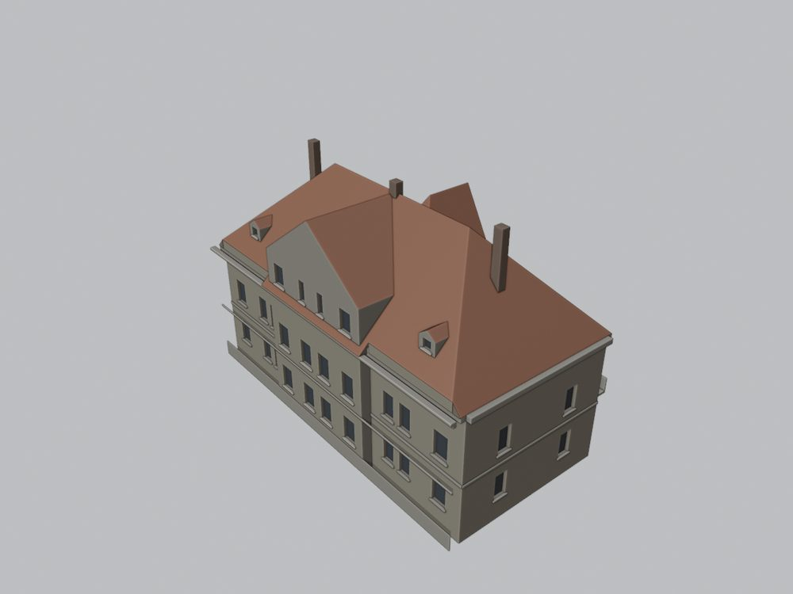
dvojvila Theresia Tiefbau-Gewerkschaft s rizalitem a štítem (1922)
45 příloh v databázi · revize r1
bez textur (částečně hypotéza – jen prosté materiály)
vila Theresia Tiefbau-Gewerkschaft s tympanonem (1925)
24 příloh v databázi · revize r1
zatím bez textur
SZ · severozápadní strana (u hřiště)
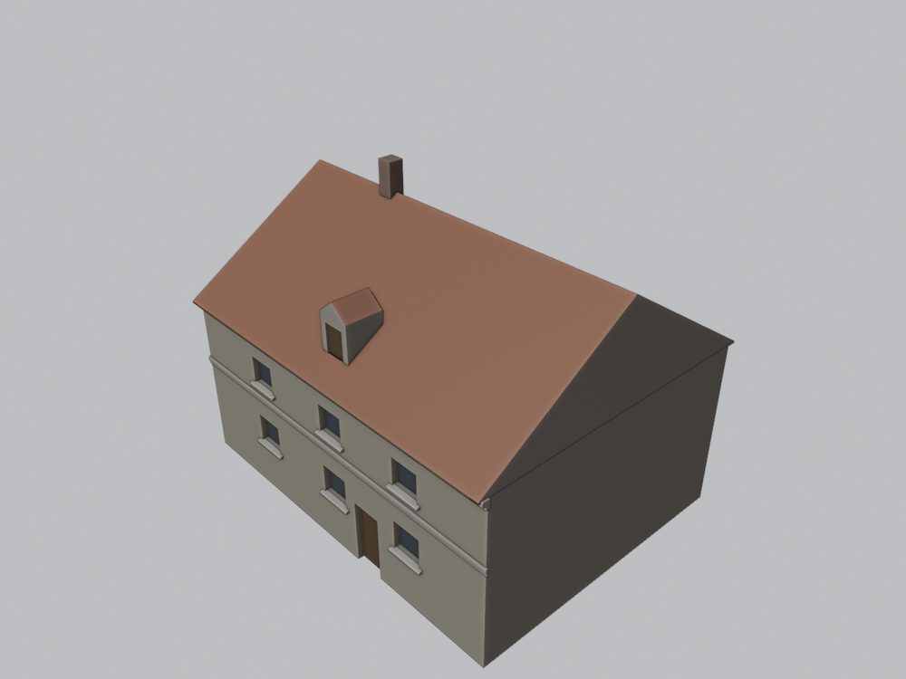
Dům je doložen jediným snímkem z doby kolem roku 1925 (pravá polovina průčelí a východní štít); levá polovina, ostatní strany a výšky jsou hypotéza. Stav v 60. letech není doložen – podle karty mlýn zanikl při rozšiřování lomu.
bývalý „Prachový mlýn“, dům doložený jediným snímkem (~1925)
8 příloh v databázi · revize r1
bez textur (částečně hypotéza – jen prosté materiály)
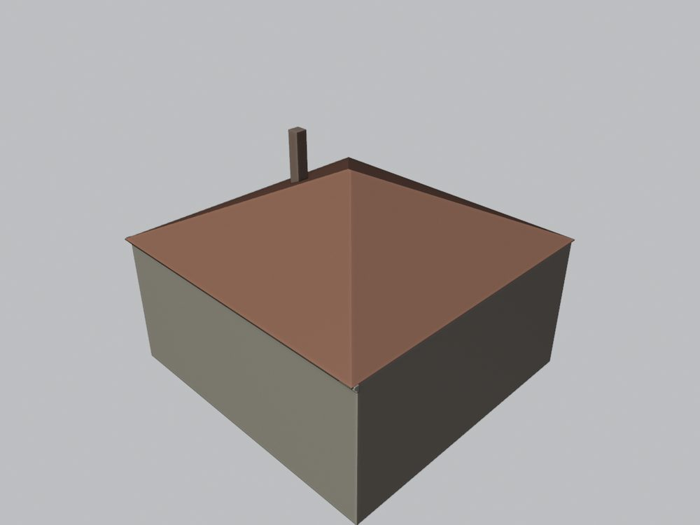
Objemová hypotéza: půdorys z GIS, podlaží a střecha odhadnuté podle vzdálených snímků dolu Evžen (~1960, ~1965); fasády nejsou doloženy, proto jsou bez otvorů.
budova dolu Evžen (Ležáky II), objemová hypotéza
8 příloh v databázi · revize r1
bez textur (hypotéza – jen prosté materiály)
Souhrnná tabulka
| Čp. | Úsek | Typ | Podlaží | Průčelí × okap (m) | GIS budova (popisek) | Přílohy | Revize | Stav |
|---|---|---|---|---|---|---|---|---|
| 426 | JV | dvojvila Theresia Tiefbau-Gewerkschaft s rizalitem a štítem (1922) | 2 + podkroví | 27,0 × 10,0 | 1570 (426) | 45 | r1 | ve 3D |
| 1425 | JV | vila Theresia Tiefbau-Gewerkschaft s tympanonem (1925) | 2 | 14,0 × 7,1 | 2072 (1425) | 24 | r1 | ve 3D |
| 421 | SZ | bývalý „Prachový mlýn“, dům doložený jediným snímkem (~1925) částečně hypotéza Dům je doložen jediným snímkem z doby kolem roku 1925 (pravá polovina průčelí a východní štít); levá polovina, ostatní strany a výšky jsou hypotéza. Stav v 60. letech není doložen – podle karty mlýn zanikl při rozšiřování lomu. | 2 | 12,5 × 5,5 | 1573 (421) | 8 | r1 | ve 3D |
| 1084 | SZ | budova dolu Evžen (Ležáky II), objemová hypotéza hypotéza Objemová hypotéza: půdorys z GIS, podlaží a střecha odhadnuté podle vzdálených snímků dolu Evžen (~1960, ~1965); fasády nejsou doloženy, proto jsou bez otvorů. | 2 (odhad) | 15,1 × 7,0 | 2071 (1084) | 8 | r1 | ve 3D |
| 990 | – | dům u smaltovny Elisa (dříve Austria) vlevo u silnice, stál do likvidace Mostu; fotografie fasády při demolici existuje, ale GIS pro něj nemá půdorys | – | – | bez půdorysu / jiná ulice | 6 | – | blocked |
| 1124 | – | hospoda Austria u smaltovny, stála do likvidace Mostu; fotografie fasády existuje, bez půdorysu v GIS | – | – | bez půdorysu / jiná ulice | 6 | – | blocked |
| 1426 | – | štíhlý dům u cesty v areálu dolu Evžen, zbořen před rokem 1965; jen vzdálený snímek ~1960, bez půdorysu v GIS | – | – | bez půdorysu / jiná ulice | 5 | – | blocked |
| 522 | – | dům Tyršovy ulice (karty KSPPOP „Tyršova čp. 522“, v GIS pod Jahnovou 730 m odtud); na kartě ke snímku smaltovny jen zmíněn | – | – | bez půdorysu / jiná ulice | 34 | – | blocked |
| 509 | – | cihelna Berty Hinke – devět stavebních plánů (komíny, sušárny, pec), bez fotografie a bez čísla v GIS; průmyslový areál není modelován | – | – | bez půdorysu / jiná ulice | 9 | – | blocked |
Šířka průčelí je z GIS nebo z rektifikované fotografie, výška okapu je odhad z plánů a fotografií. „Čeká na prameny“ = dům má půdorys v GIS, ale jeho přílohy nebylo možné načíst; „blocked“ = bez půdorysu v GIS nebo s nejistou identitou.
Rozpory a hypotézy
- 421: Prachový mlýn a přenesené číslo. Struktura 421 obsahuje dva domy: snímek Prachového mlýna na Pařidelské (~1925) a kartu KSPPOP s fasádou a náčrtem domu v ulici J. Švermy, na který bylo číslo po roce 1930 přeneseno, když mlýn zanikl při rozšiřování lomu dolu Evžen. Plán města 1938 (GIS) mlýn ještě vede, proto je v sestavě; stav v 60. letech není doložen a datum zániku neznáme. Model vychází z jediného snímku: pravá polovina průčelí (2 osy) a východní štít; levá polovina za stromem, vstup za sloupkem branky, boční a zadní stěny a výšky jsou hypotéza (štítek).
- 1084: budova dolu z dálky. Karty Komplet Starý Most přiřazují číslo 1084 stavbě „bližší komína“ v areálu dolu Evžen (Ležáky II); snímky z odvalu (~1960) a z náspu trati (~1965) ukazují důl z dálky a fasády nelze číst. Model je objemová hypotéza: půdorys GIS 2071, dvě podlaží, valbová střecha, bez otvorů (štítek). Které z budov na snímcích je 1084, zůstává otevřené.
- 990 a 1124 u smaltovny, 1426 u dolu, 522 v Tyršově. Podle karty k velmi starému pohledu na smaltovnu Elisa (dříve Austria) stály domy 1124 (hospoda Austria) a 990 vlevo u silnice „do celkové likvidace Mostu“ a mají fotografie fasád z demolice, ale GIS pro ně u ulice 56 nemá půdorys (náčrt je klade k dráze mimo osu ulice). Dům 1426 byl zbořen před rokem 1965 a půdorys nemá. Číslo 522 patří domu v Tyršově ulici (karty KSPPOP, GIS pod Jahnovou). Všechny jsou předány jako blocked.
- 1425: kam hledí štít a kde je vstup. Plán z roku 1925 kreslí průčelí s tympanonem a vstup s vnějším schodištěm na protilehlých stranách. Karty KSPPOP popisují snímek průčelí „z protější strany Pařidelské“ a snímek vstupu jako „nádvorní stranu“: model proto staví štít do ulice (severozápad) a vstup dozadu (jihovýchod).
- 426: projekt potvrzený fotografiemi. Při prvním zpracování byla uliční fasáda doložena jen projektem 1922 a nesla štítek; 3. 11. 2026 přibyly fotografie KSPPOP 1974 uličního průčelí („pohled směrem od dráhy k rozcestí Liebknechtovy“), které potvrzují 10 + 10 oken, 4 podkrovní okna rizalitu a vikýř severovýchodního křídla. Štítek byl zrušen. Vikýř jihozápadního křídla na snímcích vidět není (podle plánu), štít má volutová ramena a oválné okénko (textura). Starší plány 1874–1897 ve stejné struktuře jsou sdílené se strukturou 540 (Husovo náměstí) a patří dřívějšímu domu.
- 426: půdorys GIS proti plánu. GIS kreslí uliční čelo 20,3 m vystupující o 2,1 m, plán z roku 1922 kótuje 27,00 × 12,35 m s rizalitem 10,45 m vystupujícím 0,8 m. Model drží plán a je ukotven na zadní hranu GIS polygonu; kanonický GIS zůstává beze změny.
- Výšky z plánů a snímků. Římsa 426 je 10,0 m a hřeben 17,0 m podle elevace a řezu c–d (±0,6 m); u 1425 římsa 7,1 m, vrchol štítu 9,5 m a hřeben 11,4 m podle pohledu a řezu 1925 (±0,3 m); u 421 okap 5,6 m a hřeben 8,9 m z poměrů na snímku (±0,4 m); u 1084 odhad.
- Boční stěny vil mají okna podle půdorysů; žádná fotografie je neukazuje celé. Zadní přístavky 1425 v GIS polygonu a podkrovní okna zadní strany 426 nejsou modelovány; lizény, šambrány, okenice, oválné okénko a kartuše zadního štítu jsou textura. Polovalby mlýna 421 builder nemá – štíty jsou plné.
- Terén je plochý (z = 0 u všech domů), ačkoli silnice k Pařidlům stoupá podél dráhy; historický výškopis nebyl k dispozici.
- Dvorní a nedoložené strany jsou bez otvorů, pokud je žádný pramen neukazuje.
Údaje jsou v datech označené jako model_hypothesis, status: provisional, locked: false.
Kniha nesouladů pramenů
Případy, kdy si prameny odporují (plán proti fotografii, GIS proti plánu, chybně zařazený list, nedostupný archiv), zapisujeme do interní knihy nesouladů pramenů projektu MOST. Ta se zatím nepublikuje, proto zde uvádíme jen identifikátory případů této ulice (7):
2026-10-29_paridelska_1425-orientace-stit-k-ulici-vstup-vzadu– Pařidelská 1425: průčelí s tympanonem hledí do Pařidelské, vstup se schodištěm je vzadu – orientaci rozhodly karty, ne plán oplocení2026-10-29_paridelska_426-stare-plany-1874-1897-jiny-dum– Pařidelská 426: plány z let 1874–1897 (Wenzels-Vorstadt, Panzner, Wustel, Spitz) patří dřívějšímu domu č. 426, fotografovaná dvojvila je projekt z roku 19222026-10-29_paridelska_api-vypadek-zdroje-nedostupne– Pařidelská: 29. 10. 2026 archiv Libuše neodpovídal (TCP timeout), dávka začala z kopií jiných vláken – 421, 1084, 990, 1124, 1426 a 522 zůstaly bez pramenů2026-11-03_paridelska_1084-1426-budovy-dolu-evzen– Pařidelská 1084 a 1426: budovy dolu Evžen (Ležáky II) doložené jen vzdálenými snímky ~1960/1965; 1084 má půdorys v GIS, 1426 ne2026-11-03_paridelska_421-prachovy-mlyn-cp-preneseno-do-svermovy– Pařidelská 421: budova GIS 1573 = bývalý „Prachový mlýn“ doložený jediným snímkem ~1925; číslo 421 bylo po roce 1930 přeneseno na dům v ulici J. Švermy2026-11-03_paridelska_426-fotografie-pruceli-potvrzuji-projekt– Pařidelská 426: po obnovení archivu přibyly fotografie KSPPOP 1974 uličního průčelí – projekt 1922 byl realizován, štítek zrušen; plány 1874–1897 jsou sdílené se strukturou 540 (Husovo náměstí)2026-11-03_paridelska_990-1124-u-smaltovny-522-tyrsova– Pařidelská 990 a 1124 stály u smaltovny Elisa (hospoda Austria) a vydržely do likvidace Mostu, ale GIS pro ně nemá půdorys; 522 je dům v Tyršově ulici
Textury (Codex)
Geometrie na této stránce je bez textur. Texturované domy bude připravovat Codex na kopiích těchto modelů a doplňovat je postupně: každý dům jako vlastní GLB v models/textured/ a záznam v data/textures.json. Prohlížeč ulice i domu pak sám nabídne povrch Textury (Codex) a texturované domy vloží na jejich místo v ulici; domy se štítkem hypotézy dostanou jen prosté materiály.
Soubory ke stažení
- Celá ulice, GLB (bez zabalených obrázků, materiálová ID; obě vily a šedé bloky okolí)
- GLB jednotlivých domů jsou na jejich stránkách.
- Mapa „co kde stálo“, SVG
- Zpráva v Markdownu se seznamem pramenů všech domů a hashi příloh
- Přehled domů, JSON · Stav textur, JSON · Původ každého souboru tohoto webu

Rendery ulice
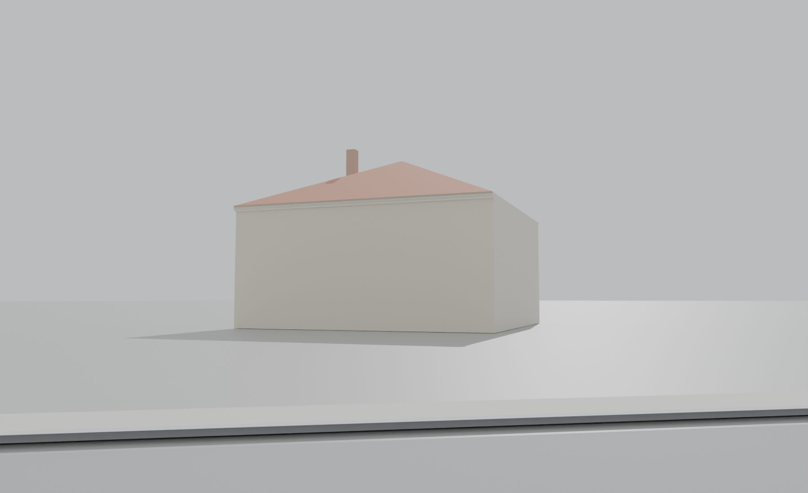
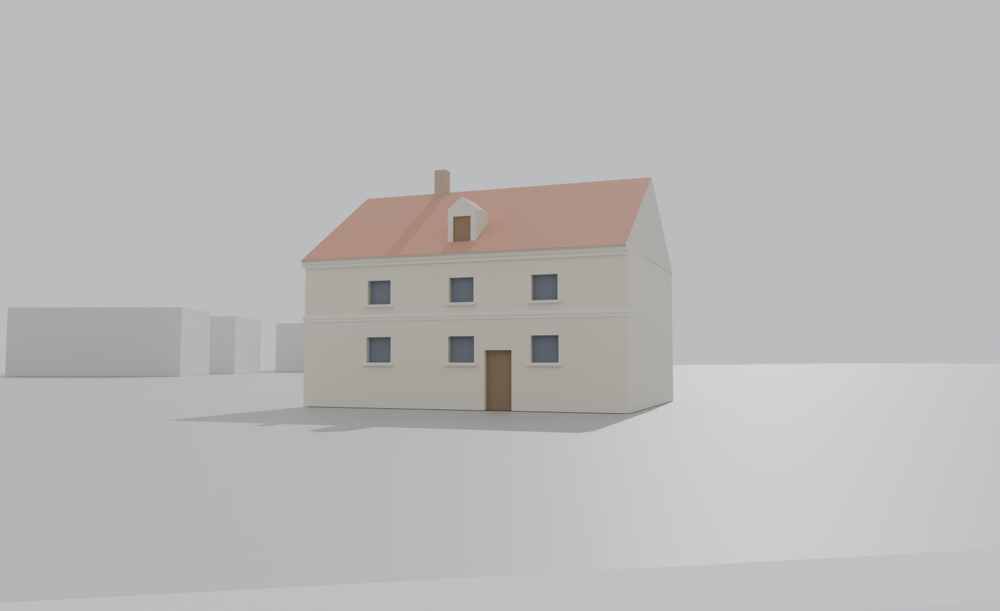
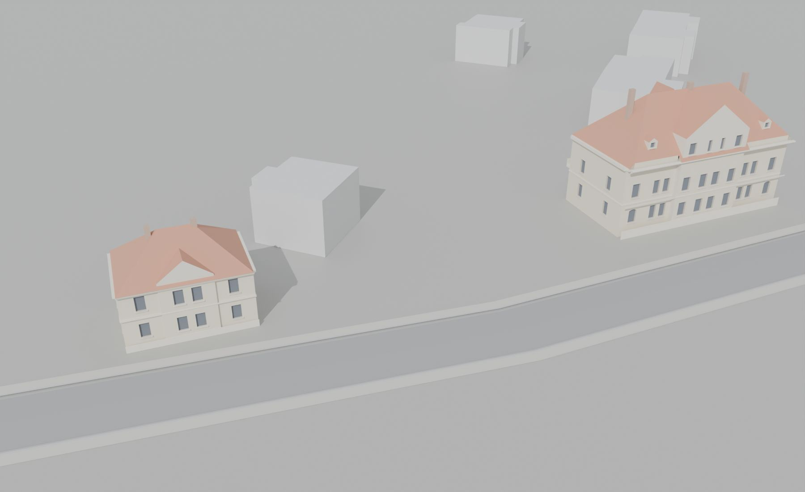
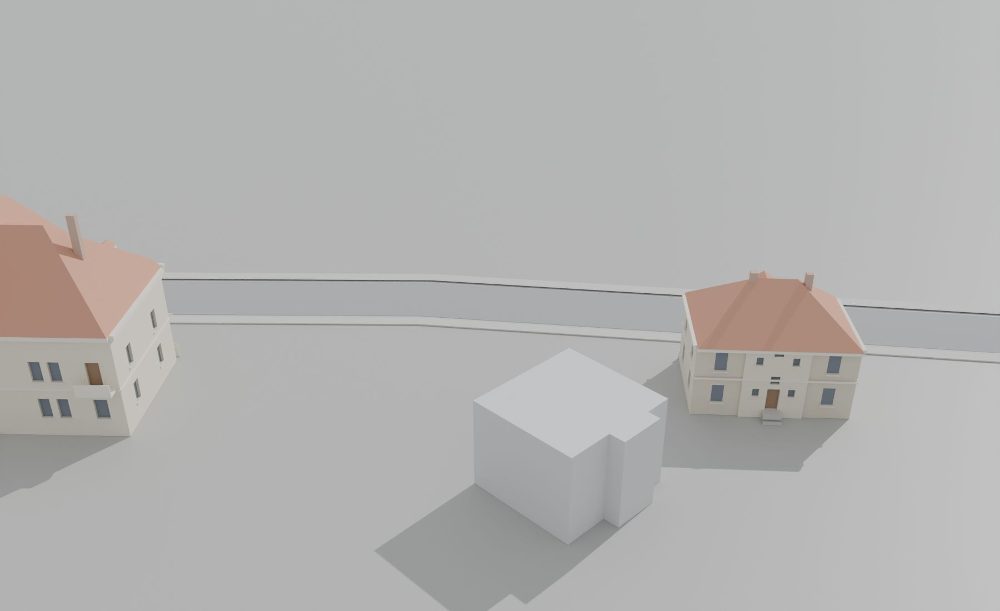
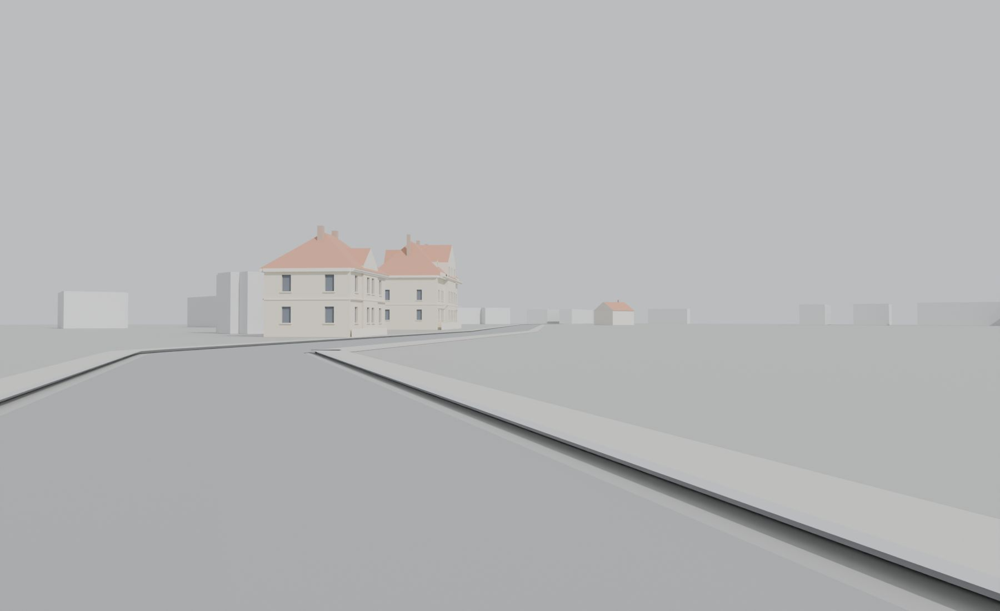
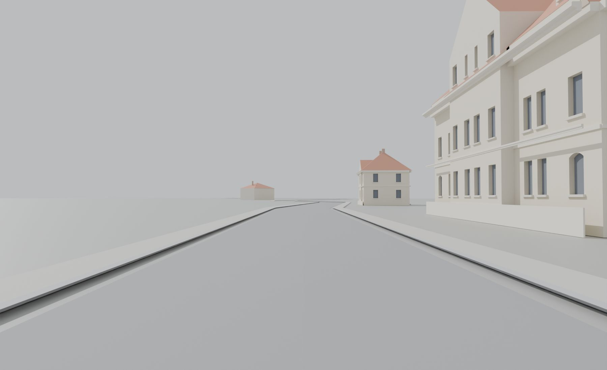
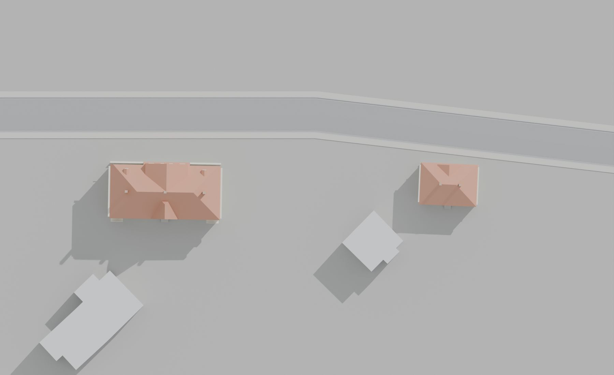
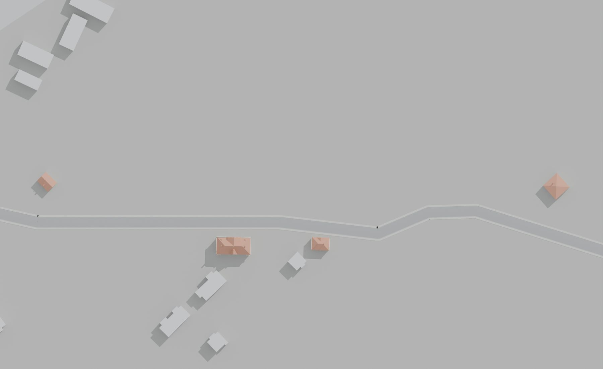
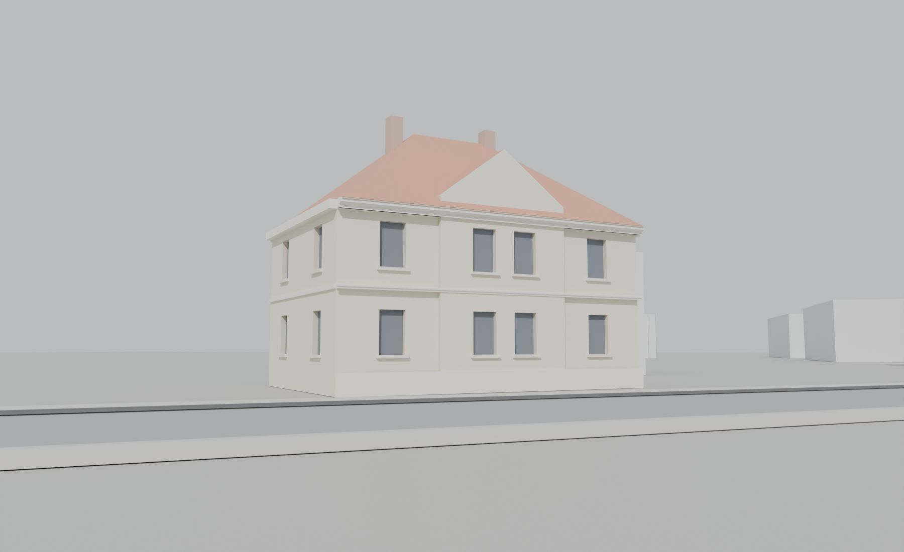
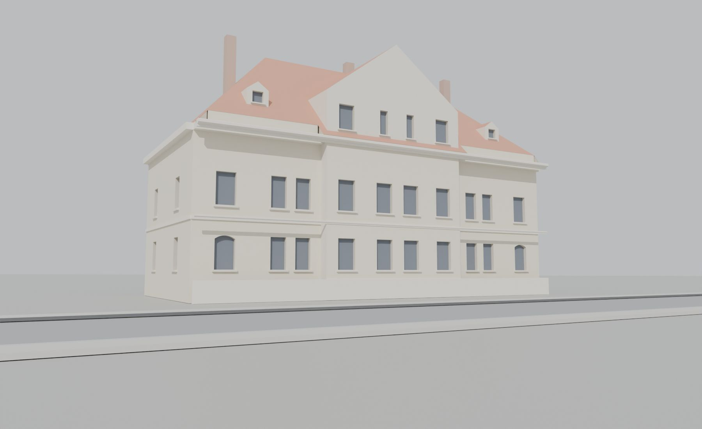